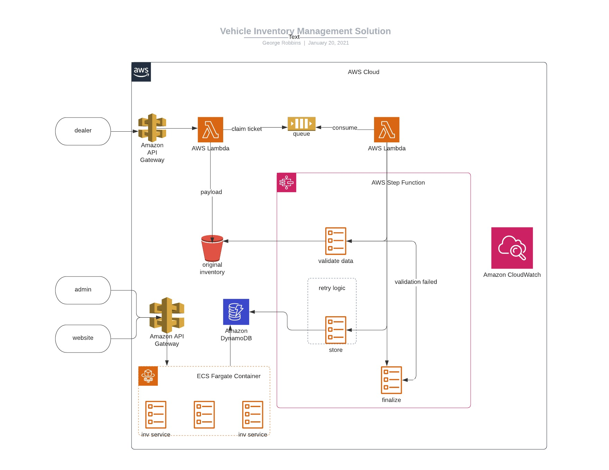

Assignment: Architectural Design Exercise
Create an architectural design document to guide a team in the implementation of a vehicle inventory management system for a dealership website provider. This document should go into sufficient detail to allow a team to implement the system, with lower-level details to be handled via iteration between team and architect. At a minimum, this should include a diagram showing the system’s components, a description and justification for technology (and paradigm) selection, and a discussion of considerations for nonfunctional requirements (performance, availability, degradation, etc). Existing components:
- An existing content management system that will integrate with the inventory management system to display vehicle inventory on websites.
- An existing set of vehicle inventory feeds coming from dealerships in a nightly
- batch. The feeds are in CSV format with the following fields:
-
Year, make, model, bodystyle, vin, color, mileage, msrp, asking_price
- An existing application for the management of the website solution. This will need to be modified to support, at a minimum, setting an “Internet Price” for each vehicle.
Overview
We will create a vehicle inventory management system to support front-end clients' needs which include the following use-cases :
- Dealership web site support for viewing data related to vehicle inventory via an existing CMS application.
- Updating inventory data via an existing admin app.
Considerations and Assumptions
Environment
We have production and non-production aws accounts with full access in the non-prod accounts to create, modify, and deliver our solution.
Team Experience
We have a team of developers that have sufficient AWS rights and are familiar with
- cicd tooling (terraform, codebuild, roles and policies, proper tagging, and Cloudwatch monitoring/alerting.
- languages: Java, Python and NodeJS
- database design and implementation: DynamoDB
- microservice implementations leveraging Java/SpringBoot/Maven/Docker
Audience and Traffic
- Peak hours for client activity occurs during standard business hours (8am to 7pm EST).
- Audience consist of dealership website user activity and Inventory Management application activity.
The Data
- Dealers have already been vetted and are managed in a separate solution. Access to dealer contact info is available to our solution.
- Each payload (file) represents ALL the inventory for an individual dealer.
- The payloads themselves are immutable (preserving the paper trail).
- There is no limit to the number of vehicles that can appear in a payload.
- Dealers are allowed to send any number of feeds during the nightly window. (emergency updates, etc)
- The dealer identifier is embedded in the filename, adhering to pre-defined naming conventions.
- We will NOT store personal info or any data requiring privacy.
- If a payload's dealer id is not valid, the system will discard the feed for that "unknown" dealer.
- Industry standards exist to define appropriate values for vehicle properties based on OEM build specs.
- Inventory feeds are received nightly in a csv format.
- The processing and syndication of feeds does not take longer than a 24 hour window.
- Feeds taking longer then the predefined window shall be treated as stale and appropriate notifications shall be sent.
- The processing and syndication of feeds will not negatively effect existing client application performance.
- Feeds are handled in the order in which they are received, based on timestamp.
- Redundant feeds do not cause adverse effects to overall inventory. (updating inventory should be idempotent)
- Sourced inventory data should be scrubbed and validated, setting aside invalid payloads and notifying the authors of such payloads.
- DynamoDB will be the source of truth for our inventory data.
- Authors of updates to the Inventory data (pricing, etc) are not captured by the system.
Inventory Management API
- Api documentation and helpful guides are published via a github readme (or github static pages site) and kept up-to-date as the solution evolves.
- Client application use cases are captured in GraphQL API contracts, providing predictable data shaping for the client.
- Client-side pre-request validation is exercised, with backend validation present in the future event that we gain additional clients.
- Standard HTTP Responses and (Successful and Error) are supported in all calls to the api. Response status and messaging is fully described in the api documentation.
Lets get started!
Inventory processing
Stand up the DynamoDB table with the pre-defined fields.
| Column Name | Data Type | Required | Example Value | Notes |
|---|---|---|---|---|
| DEALER_ID | Integer | Yes | 123444 | predefined value |
| YEAR | Integer | Yes | 2021 | future years are valid |
| MAKE | String | Yes | FORD | oem defined |
| MODEL | String | Yes | BRONCO | oem defined |
| BODY_STYLE | String | Yes | TRL | oem defined |
| VIN | String | Yes | HDU874839483UJU76 | 17 characters |
| COLOR | String | Yes | RED | oem defined |
| MILEAGE | Integer | Yes | 30000 | round up |
| MSRP | BigDecimal | Yes | 45000.34 | 2 places of precision |
| ASKING_PRICE | BigDecimal | Yes | 45000.00 | 2 places of precision |
| LAST_UPDATE | String | Yes | 2015-12-21T17:42:34Z | dynamoDB does not support TimeStamp |
Solution Design 
Technology Selection Considerations
DynamoDB:
- AWS-Java APIs exist
- supports over 10 trillion requests per day
- supports over 20 million requests per second
SQS:
- FIFO queuing
- Built-in throttling
- Durable
Claim Ticket Pattern
- Mitigates large payload sizes.
- SQS message size limitations exist.
StepFunctions
- Orchestration for today's requirements.
- Flexibility for future requirements (just plug in the new stage)
- Supports throttling and retries for any defined task.
- Lambda tasks can be implemented in our chosen language.
SpringBoot Microservice
- Team experience
- Performance
- Existing Maven archetypes exist for generating boiler-plate scaffolding.
- Large support community.
GraphQL
- Provides the most flexibility for the client's needs.
- Mitigates the need for excessive api endpoints based on RESTful CRUD operations.
- Only deliver what you need to. ** This is important when data transfer costs come into play. (example: API Gateway)
Final Verdict (Judgement Day!)
Thank you for taking the time to interview with the hiring team for the Lead Architect position. Unfortunately, at this time we will not be proceeding to the next step in the process. Below is feedback from Malina. If you have any questions at all, feel free to reach out.
- You demonstrated a number of skills and attitudes that are an excellent fit for an architectural role. You have great enthusiasm for coaching and mentoring. You think of the needs of all stakeholders – business and product in particular – and consider them while implementing solutions. Finally, you emphasized the need to consider the capabilities of other systems when integrating with them.
- There were a few areas that need further growth and development in order to succeed as an architect. First is investigating the various technology options available for an implementation, particularly serverless options. A second area is in exploring higher levels of abstraction as solutions – when given a technical problem, consider whether or not the problem could be solved more simply by changing the general approach, rather than fixing the specific issue with a potentially complex solution.